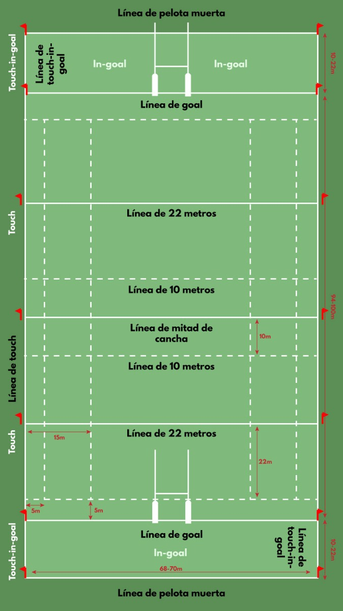
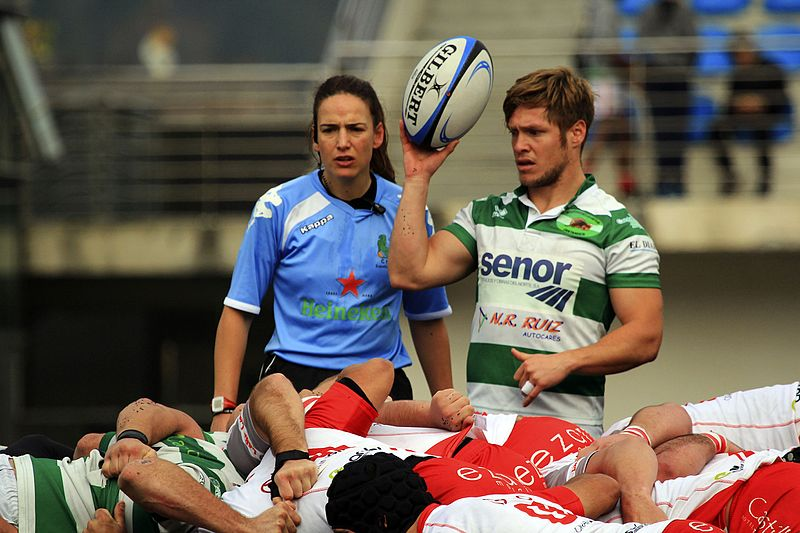

Campo de rugby
Las medidas reglamentarias son 100 metros de largo por 69 de ancho. Las líneas laterales se llaman líneas de “touch” y hay dos zonas llamadas zonas de gol/ensayo (“in-goal”) detrás de la línea de ensayo/try , esta zona de ensayo/ingoal debe tener entre 10 y 22 metros de profundidad. Los postes de gol se encuentran sobre la línea de ensayo/try con una barra transversal a tres metros de altura. Los postes tienen una separación de 5,6 metros. La altura de de los postes es preferible que supere los ocho metros.
Otra línea importante en el campo de juego es la línea de mitad de campo en los 50 metros. Existe una línea intermitente a los 10 metros paralela a ésta la cual se utiliza por los jueces de línea. Además hay otra línea continua a los 22 metros de la línea de ensayo/try en ambos lados. Finalmente, hay líneas intermitentes a los cinco metros y 15 metros paralelas a las líneas de banda (touch), estas líneas se utilizan para identificar dónde se deben efectuar las touch/ line-outs (saques de banda).

Jugadores y tiempo de juego
El rugby se juega en diferentes modalidades, dependiendo del número de jugadores en cada equipo. La más común es con 15 jugadores por equipo y dura 80 minutos. Una versión muy popular es con siete jugadores por equipo (“sevens”) con dos tiempos de siete minutos. Una variedad menos practicada es con 10 jugadores por equipo.
Desarrollo de un partido
- No se permite pasar el balón hacia adelante.
- Tampoco se permite que la pelota caiga hacia adelante, lo cual se denomina knock-on o avant.
- El reglamento del rugby estipula que el balón solo puede avanzar si es llevado, o si se patea hacia delante.
- Todo jugador que está en el campo puede avanzar con el balón.
- Un jugador que ha sido tackleado o derribado, debe pasar o soltar la pelota inmediatamente.
- El jugador que ha derribado al oponente, también tiene que soltar al jugador inmediatamente.
- Un melé/scrum reinicia el juego después de un avant.
- También se realizan scrum por otros motivos menos frecuentes.
- El rugby es un deporte continuo, no hay interrupciones excepto que haya lesionados.
- La línea de fondo o line-out reinicia el juego cuando la pelota sale del terreno de juego.
- Se produce un ensayo/try cuando una equipo planta el balón más allá de la línea de goal.
- Según las reglas del rugby se otorgan cinco puntos por ensayo/try.
- Después del try puedes patear el balón, si pasa entre los dos postes, te dan dos puntos adicionales.
- Si le pegas al balón cuando el partido está en marcha y pasa entre los postes te dan tres puntos (drop goal).
- Después de convertir un ensayo o un penal, la pelota se lanza hacia el equipo anotador.
Puntuación
El objetivo fundamental consiste en obtener más puntos que el adversario. Los puntos se pueden obtener del siguiente modo:
Try: Cinco puntos. Se marca un try cuando se apoya la pelota sobre o más allá de la línea de goal de los oponentes en la zona de in-goal. Se puede otorgar un try penal si un jugador hubiera marcado un try de no haber sido por juego sucio de los oponentes.
Conversión: Dos puntos. Después de marcar un try el mismo equipo puede intentar lograr dos puntos más pateando la pelota entre los postes y sobre el travesaño desde un lugar en línea con el lugar donde fue marcado el try.
Penal: Tres puntos. Cuando se otorgue un penal a favor de un equipo después de una infracción de los oponentes, el equipo podrá elegir patear al goal.
Drop goal: Tres puntos. Se marca un drop goal cuando un jugador patea al goal en el juego abierto dejando caer la pelota y pateándola enseguida después de que pique en el suelo.
El árbitro es el responsable de hacer respetar el reglamento. Se juega en dos tiempos continuos de 40 minutos cada uno con un intermedio de cinco minutos. El tiempo lo lleva el árbitro principal y debe detenerlo solamente cuando haya lesiones. Hay dos jueces de línea que ayudan a indicar cuándo el balón o la persona que lo lleva salen del campo de juego.

{kind=link}